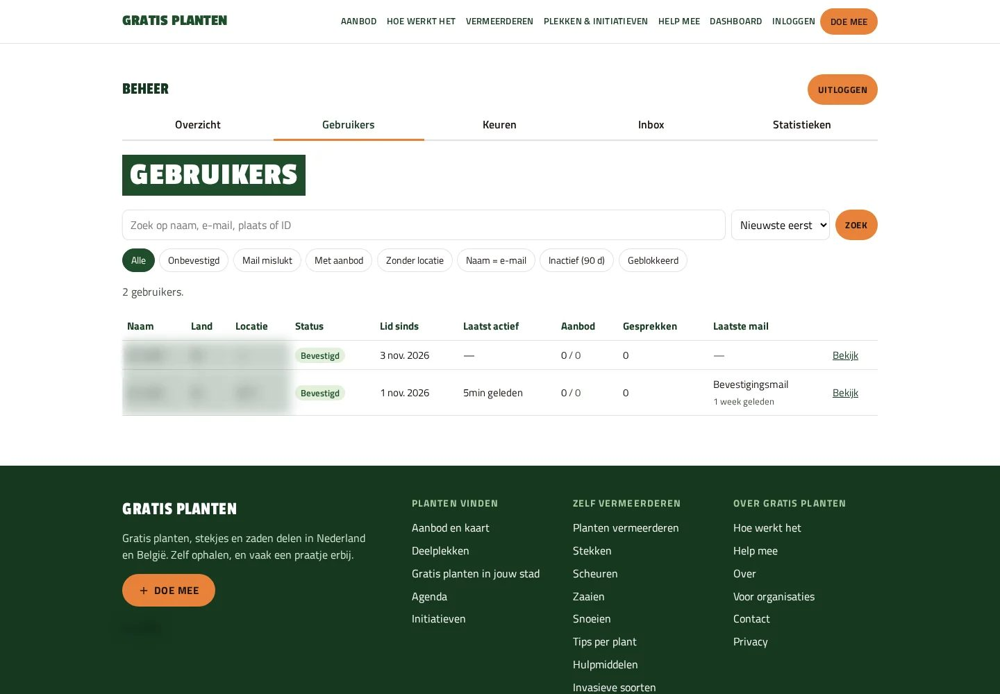
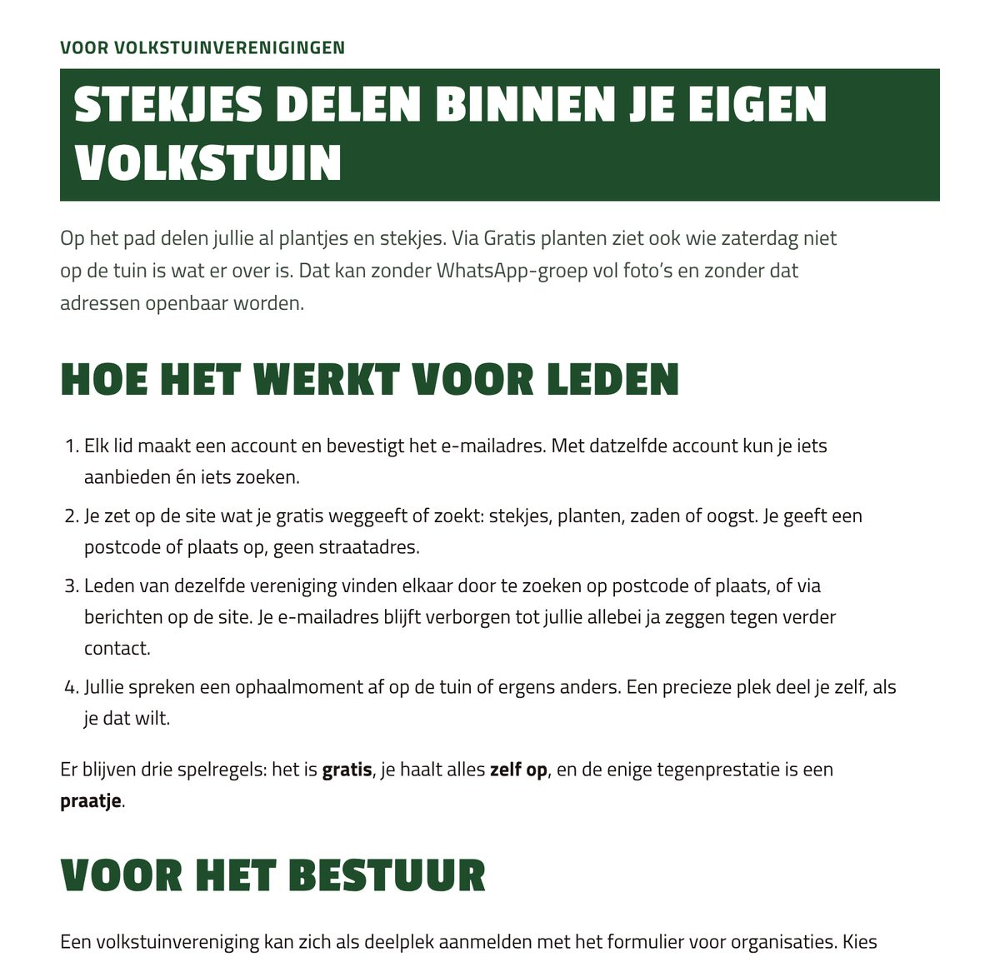
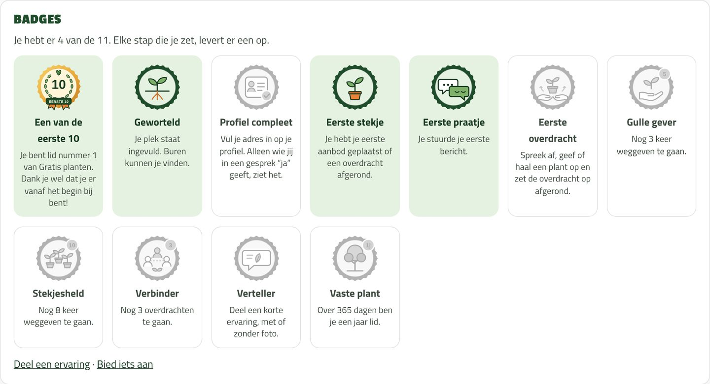
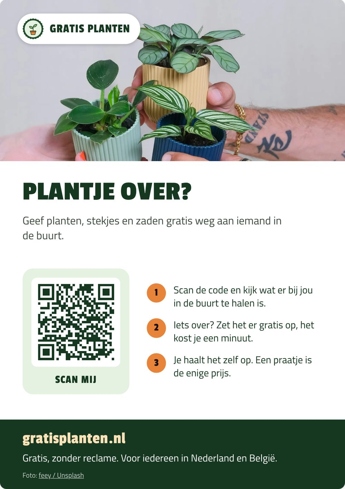
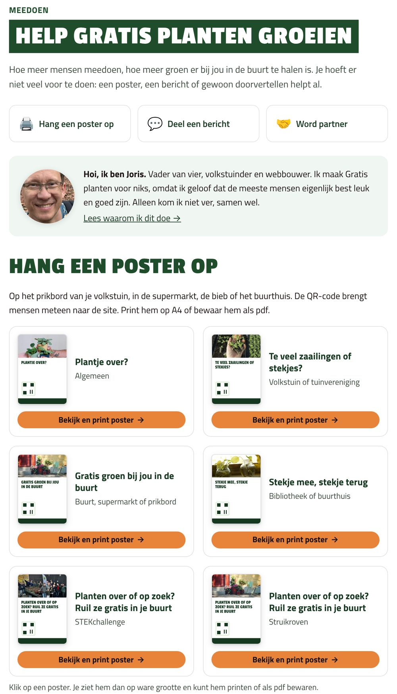
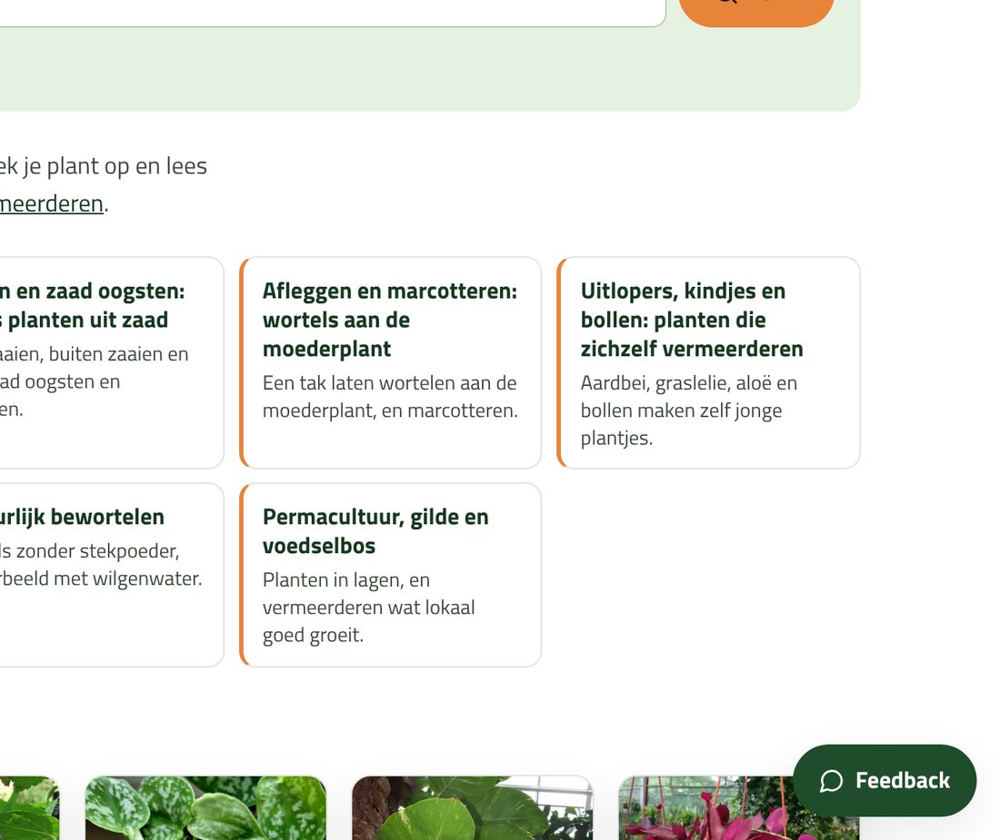
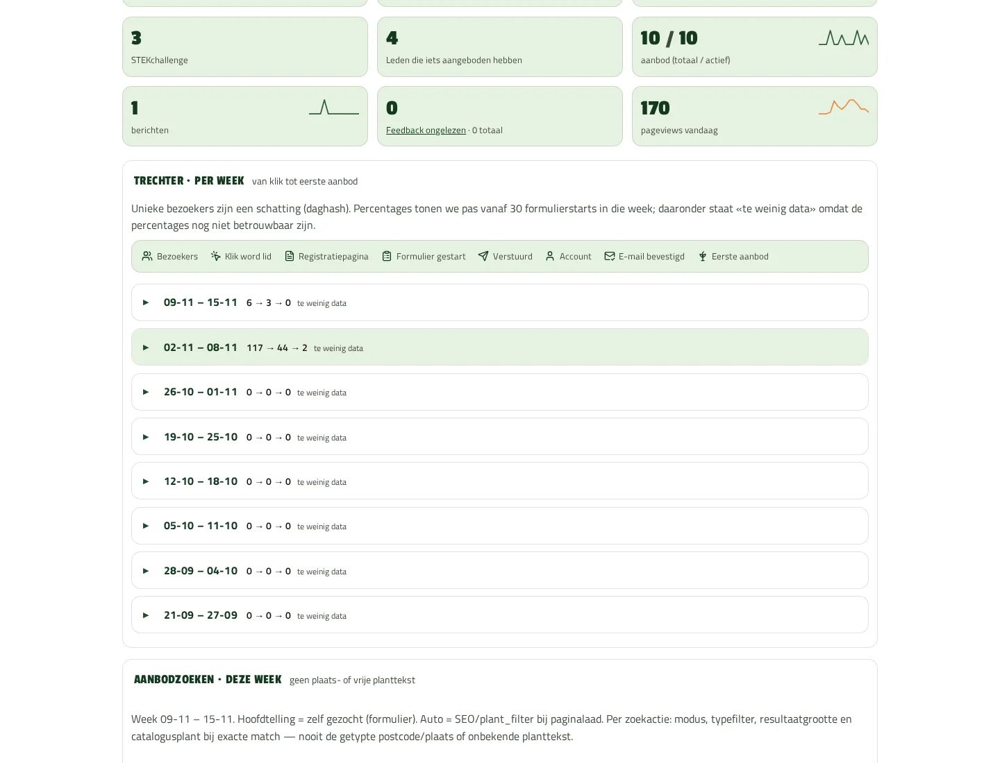
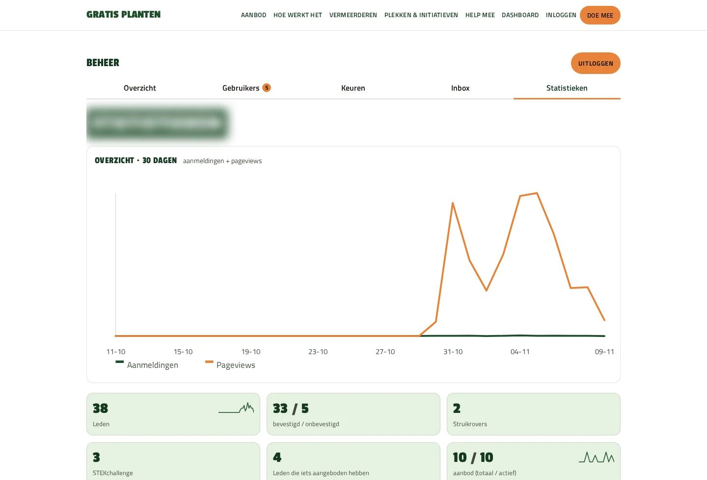

Eigen project
Gratis planten
Een compleet ledenplatform, in een paar dagen gebouwd en live gezet. Daarna heb ik er net zoveel werk in gestoken om er mensen naartoe te krijgen. Gratis planten is mijn eigen zijproject: buurtgenoten geven elkaar gratis stekjes, planten en zaden. Het laat zien wat ik doe als je iets online wilt zetten dat écht gebruikt wordt.


Waarom deze case
Een website waar niemand komt, levert niks op
Veel online projecten stoppen bij de livegang. Dan staat er iets moois, maar komt er niemand. Bij Gratis planten deed ik twee dingen tegelijk: het platform bouwen, en vanaf de eerste dag uitwerken hoe mensen het vinden, gebruiken en doorvertellen.
Resultaat
Tien keer zoveel bezoek in de eerste week
Op de eerste dag (30 oktober) bekeken bezoekers 153 pagina’s. Zes dagen later, op 5 november, waren dat er 1.527. Tot 9 november kwamen er 38 aanmeldingen binnen, en op 9 november schreef Positief nieuws erover. Bron cijfers: eigen statistieken van Gratis planten, gemeten op 9 november 2026.
Bouwen
Een compleet platform, in dagen in plaats van maanden
Op 29 oktober schreef ik de eerste regel code, een dag later stond het live. In de negen dagen daarna gingen er 71 updates live. Wat erin zit:
- Accounts voor leden, met een bevestigingsmail bij aanmelden.
- Aanbod plaatsen met foto’s, zoeken op postcode en een kaart met aanbod en vaste deelplekken.
- Berichten tussen leden, zodat ze samen een afspraak maken.
- Een pagina per plaats in Nederland en België, een agenda voor ruilbeurzen en stektips per plant.
- Een beheerdashboard: leden, aanmeldingen van organisaties controleren, meldingen, en statistieken van bezoek tot eerste aanbod.
-
Aanbod en deelplekken rond Haarlem -

Beheer: ledenlijst (persoonsgegevens onleesbaar)
Bereik
Zo kwamen er mensen naartoe
Een platform met leden heeft alleen zin als er leden komen. Daarom heb ik meerdere kanalen bedacht en uitgewerkt, en per kanaal gemeten wat het oplevert.
- Social media met AI-agents. Ik zette een flow op waarin AI-agents berichten voorbereiden, die ik deel in verschillende Facebookgroepen. Elk bericht krijgt een eigen trackinglink, zodat ik per bericht en per groep zie hoeveel bezoek en aanmeldingen het oplevert.
- Onderzoek naar organisaties. Welke organisaties brengen snel veel mensen binnen? Denk aan tuinverenigingen, zadenbibliotheken, plantenasiels en initiatieven als Struikroven en de STEKchallenge.
- Mailinglijsten en mailings. Op basis van dat onderzoek bouwde ik mailinglijsten op. Mailings worden met AI voorbereid; ik keur ze goed en verstuur er ongeveer vijf per werkdag.
- Pagina’s per doelgroep. Aparte pagina’s voor volkstuinen, organisaties en initiatieven, zodat iedere groep een eigen ingang heeft.

Meepromoten
Leden die het platform zelf verder brengen
De beste promotie komt van mensen die al meedoen. Daarom heb ik het hen zo makkelijk en leuk mogelijk gemaakt om Gratis planten door te vertellen.
- Badges. Leden verdienen badges als «Eerste stekje», «Gulle gever» en «Stekjesheld». De eerste 10, 50 en 100 leden krijgen een oprichtersbadge, en er is één «Pionier»: het lid dat als allereerste iets weggaf.
- Posters en flyers. Om te printen, met QR-code, voor de volkstuin, de buurt, de bieb of het clubhuis van een vereniging. Plus stekjeslabels om bij een plantje te steken.
- Kant-en-klare berichten. Teksten met een kopieerknop en deelknoppen voor Facebook, WhatsApp en LinkedIn.
- Altijd een volgende stap. Op hun accountpagina zien leden wat ze nu kunnen doen: een bericht beantwoorden, iets aanbieden of de volgende badge halen.

-

Poster om op te hangen, met QR-code -

Help mee: posters, deelberichten en partners
Verbeteren
Vanaf dag één meten en bijsturen
- Feedbackknop vanaf het begin. Leden kunnen op elke pagina direct laten weten wat beter kan. Die meldingen komen binnen in het beheer.
- Eigen dashboard. Bezoek, aanmeldingen, en waar mensen afhaken op weg naar hun eerste aanbod.
- Per kanaal zien wat werkt. Welk bericht, welke groep en welke poster brengt mensen binnen.
- Privacy goed geregeld. Bezoek wordt geteld zonder IP-adressen op te slaan, en locatiegegevens worden uit foto’s gehaald.
Op basis daarvan stuurde ik elke dag bij. Zo kwam er op dag 3 heel België bij, en later een aparte pagina voor tuinverenigingen.
-

Feedbackknop rechtsonder op elke pagina -

Van bezoeker tot eerste aanbod, per week
Stand
Na elf dagen, in cijfers
- 9.038 bekeken pagina’s in de eerste elf dagen.
- 38 aanmeldingen en 10 nieuwe aanbiedingen.
- 71 updates live in negen dagen.
- 100 pagina’s per plaats, waarvan 53 vanzelf zijn ontstaan omdat er aanbod of een deelplek bijkwam.
- 36 artikelen met stektips en uitleg.
- Steeds meer deelplekken in Nederland en België; elke week komen er nieuwe bij.

Bron: eigen statistieken en projecthistorie van Gratis planten, 9 november 2026.
Samenwerken
Wat heb jij hieraan?
Wil je iets online zetten waar mensen zich aanmelden, iets aanbieden of elkaar vinden? Dan bouw ik niet alleen het platform. Ik denk ook mee over hoe het gebruikt gaat worden:
- Snel een werkende eerste versie, in plaats van maanden wachten op alles tegelijk.
- Welke kanalen en organisaties je het snelst bij je doelgroep brengen.
- Hoe gebruikers het zelf gaan doorvertellen.
- Meten wat werkt, en daarop bijsturen.
- AI waar het tijd scheelt, met mij als eindverantwoordelijke voor wat naar buiten gaat.
Elk project heeft een eigen tempo. Deze case laat zien hoe ik werk; het is geen belofte dat elk project in negen dagen staat.
Herkenbaar?
Wil je iets online dat echt gebruikt wordt?
Vertel me wat mensen moeten kunnen doen en wie je wilt bereiken. Dan kijk ik wat je eerst bouwt en hoe je er mensen naartoe krijgt.